Bienvenue sur le tutoriel d'Endive !
Endive est un assistant de preuve à visée pédagogique. La version présentée sur ce tutoriel est une version type "Scratch", utilisant des blocs pour construire les énoncés et les preuves.
Un assistant de preuve, c'est comme un professeur de mathématiques très gentil, qui lit ce que vous faites par dessus votre épaule, et vous dit si c'est bon ou pas, et parfois même vous aide un peu :)
Dans ce tutoriel, vous trouverez des explications sur les fonctionnalités de l'assistant de preuve ainsi que de nombreux exemples couvrant les différents constructeurs à votre disposition. Le menu sur votre gauche vous permet d'explorer les différents chapitres du tutoriel. Bonne découverte !
Voici à quoi ressemble la page lorsque vous arrivez sur Endive !
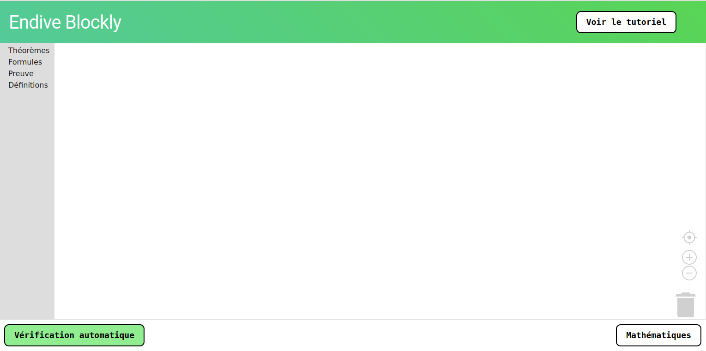Un menu sur votre gauche vous permet d'accéder aux différents blocs disponibles. L'onglet Théorèmes fournit le bloc de base qui va permettre de relier un énoncé et sa preuve mathématique. L'onglet Formules contient différents blocs qui vont permettre la construction d'un énoncé. Enfin, l'onglet Preuve fournit les blocs nécessaires à la structure de la preuve mathématique.
Un grand espace blanc est à votre disposition à droite de ce menu. C'est ici que vous allez glisser vos blocs pour construire vos théorèmes. Pour placer un bloc dans cette zone, vous pouvez simplement cliquer dessus avec le clic gauche de votre souris. Pour le placer où vous le souhaitez dans l'espace à votre disposition, il suffit de rester appuyé sur le clic gauche et de le déplacer, puis relâcher le bouton lorsqu'il se trouve à l'endroit souhaité. Pour assembler les différents blocs ensemble, il suffit d'imbriquer les blocs en faisant correspondre les encoches.
Voici une petite vidéo démonstrative :
Attention, les blocs peuvent s'imbriquer de plein de manières différentes comme ci-dessous :
Il est également possible de supprimer un bloc ou un assemblage de bloc en faisant glisser la structure sur l'icône poubelle en bas à gauche de la zone. Le raccourci clavier "suppr" permet la même chose.
Le raccourci clavier "Ctrl c - Ctrl v" vous permet de dupliquer le bloc ou l'assemblage de bloc sélectionné. "Ctrl z" permet d'annuler la dernière action faite.
Les icônes "+" et "-" au dessus de l'icône poubelle vous permettent de zoomer ou dezoomer et l'icône cible vous permet de revenir à la taille initiale.
Le bouton en bas à droite "Mathématiques", lorsqu'il est cliqué, crée un espace à droite de l'espace de création. Le texte mathématiques de la construction en cours est alors affiché dans cette zone. Pour enlever cette zone, il suffit de cliquer de nouveau sur le bouton "Mathématiques".
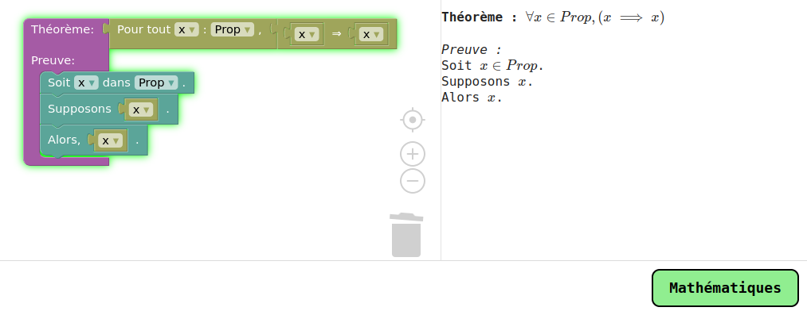Dans cette section, les blocs de base pour énoncer et prouver une proposition mathématique vont être présentés.
Dans l'onglet Théorème du menu à gauche, vous trouverez le bloc Théorème. Pour ce bloc, l'encoche à droite du mot Théorème est dédiée à la construction d'un énoncé mathématique. L'espace en dessous du mot "Preuve" est consacré à la construction de la preuve de l'énoncé.
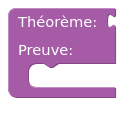
Dans l'onglet Formules, vous trouverez tous les blocs nécessaires à la
construction d'un énoncé mathématique. On y trouve le bloc "x" qui est
le bloc variable.
Vous pouvez renommer x (ou tout autre nom) en le nom que vous
souhaitez en cliquant sur le nom actuel, puis "Rename variable...".
Vous pouvez alors entrer le nouveau nom que vous souhaitez. Un certain
nombre de noms de variables sont déjà disponibles.
Le bloc "Pour tout x dans Prop" permet d'écrire des énoncés mathématiques contenant le quantificateur universel ∀. Plus concrètement, il permet d'énoncer des phrases comme "Pour tout nombre x plus grand que 1, x est plus grand que 0". De même, il est possible de renommer la variable comme indiqué précédemment.
Enfin, on trouve le bloc Implication (⇒), expliqué plus en détail dans le chapitre suivant.
L'onglet Preuve contient 3 blocs différents :
Des utilisations concrètes de ces blocs seront présentées au chapitre suivant.
Endive fournit un bloc Implication (⇒) que vous trouverez dans l'onglet formule. Ce bloc attend qu'on lui fournisse deux autres blocs, notons les A et B. Le bloc complété signifie "Si A, alors B".
Regardons un premier exemple afin que ceci soit plus parlant.
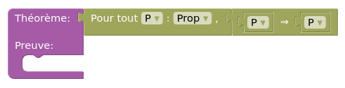Le théorème ci-dessus énonce ceci : "Pour toute proposition P, si P, alors P". Cela semble parfaitement vrai, mais comment le prouver formellement ? Avec Endive évidemment ! Voici la preuve :
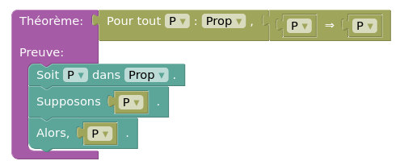L'énoncé commence par "Pour toute proposition P". On introduit donc une telle proposition avec le bloc "Soit P dans Prop". On veut montrer : "Si P, alors P". Il faut donc supposer que l'on a P et c'est ce qui est fait avec le bloc "Supposons P". Enfin, on peut conclure que l'on a P avec le bloc "Alors P". Il est intéressant de noter que le bloc "Alors P" n'est pas obligatoire pour terminer la preuve. En effet, Endive déduit de lui même que l'on a fini la preuve car il voit que l'on a P dans les hypothèses.
Regardons un autre exemple un peu plus complexe :
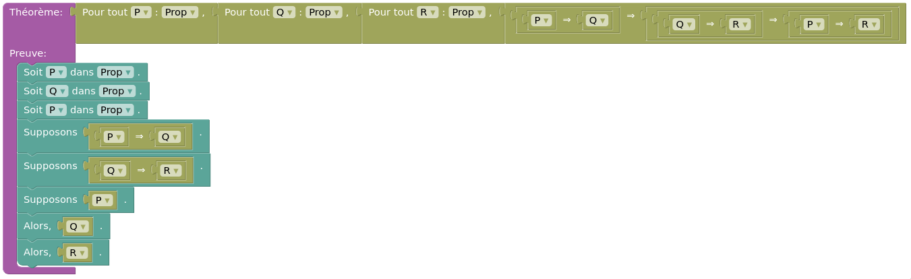Ici, on veut montrer que :
Pour toutes propositions P, Q et R, ((P ⇒ Q) ⇒ (Q ⇒ R) ⇒ (P ⇒ R))
On commence par introduire les 3 propositions P, Q et R avec les blocs
"Soit". On suppose P⇒Q puis Q⇒R avec le bloc "Supposons". On veut donc
maintenant montrer P⇒R. Pour ce faire, on suppose P et on montre R.
Étant donné que l'on a comme hypothèses P⇒Q et P, on peut conclure que
l'on a Q ! C'est ce que fait ici le bloc "Alors, Q". Q est alors
ajoutée aux hypothèses que l'on a. Maintenant, on peut conclure car on
a dans les hypothèses Q⇒R et Q. C'est ce que fait le bloc "Alors, R" !
Avec ce dernier exemple, on voit que les énoncés avec des implications peuvent vite être très longs. Endive propose un autre affichage plus compact. Il suffit de double-cliquer sur le symbole ⇒ du bloc. Voici une petite vidéo démonstrative :
Et voilà, vous avez désormais tous les outils nécessaires pour faire de belles preuves d'énoncés à base d'implication !
Endive est un assistant de preuve. Cela signifie qu'il vérifie à chaque étape que votre preuve est bien formulée, valide, et que vous prouvez bien ce que vous aviez annoncé.
Par défaut, la vérification automatique est activée. Cela signifie qu'Endive vérifie en permanence que tout est correct. Si ce n'est pas le cas, le bloc s'affiche en rouge et Endive vous propose des petits messages d'explication pour comprendre ce qui ne va pas. Pas de panique si le bloc est rouge dès le début, cela signifie juste que vous n'avez pas fini d'écrire votre énoncé.
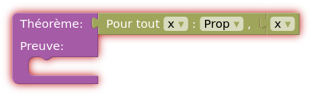Voici quelques exemples d'erreurs que vous êtes susceptibles de rencontrer :
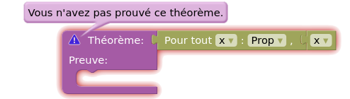 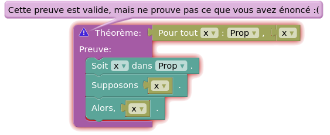 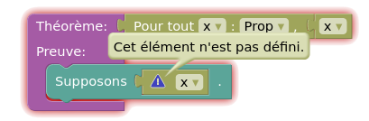Lorsque tout est bon, votre bloc s'illumine en vert, bravo !
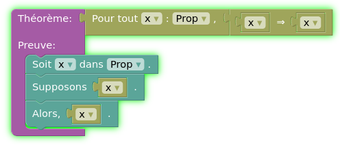Si vous préférez ne pas avoir la vérification automatique, vous pouvez appuyer sur le bouton vert "Vérification automatique", qui devient alors blanc. Vous pouvez alors appuyer sur le bouton "Vérifier la preuve" qui est apparu en bas pour vérifier la preuve seulement quand vous le souhaitez. Pour réactiver la vérification automatique, il suffit d'appuyer de nouveau sur le bouton "Vérification automatique".
Tester moi-même !